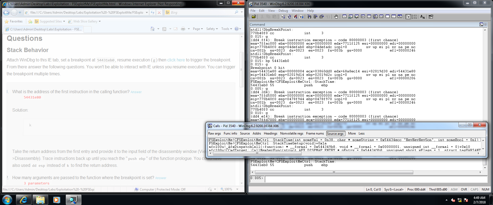
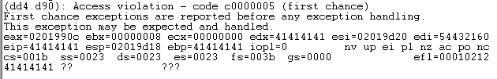
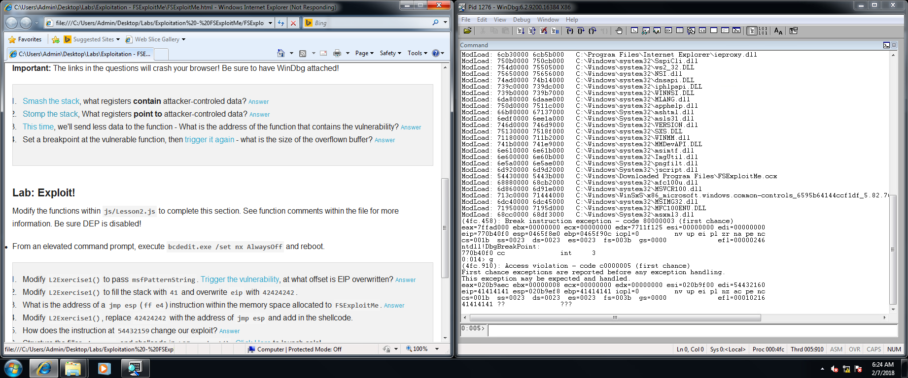
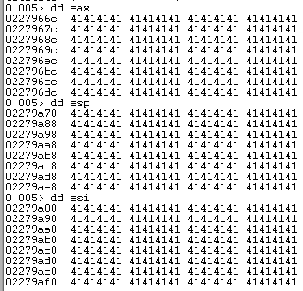

Nice to meet you Brad!
Most of the exploits out in the world are Windows based, so we're going to focus on Windows. Hacking involves controlling programs in a way other than originally intended. For example, when asked to go left or right, going straight or backwards. Your goal is to think outside of the box to do what the developer didn't think about. You can find "bugs" that alter the behavior of the program or take advantage of a misconfigured or poor programming decision (ex: weak password). Hacking is a very serious thing now (think militarized cyber armies), so you have to be safe and ethical when learning how. Also, if you ever want to cash in on a bug bounty, don't go to the company but go directly to the bug bounty team, or you may get lawyers threatening to sue you. Lawyers don't like being hacked.
Attacks used to target "border" "DMZ" systems, so nowadays companies make sure that those systems are "hardened" to defend from those kinds of attacks. As such, attackers have changed target to using phishing and social engineering on users. If their attack succeeds, they can use the users' resources for deeper attacks. Attackers also go after the websites that their target users use, compromise them, and then use them to install malware in the users' browsers.
For this stuff, take the vulnerability and exploit it, not look for vulnerabilities.
WinDB lab Launches program, instantly inserts a breakpoint, and leaves it for you to step through it. Load up FSExploitMe File > attach -> 2nd IE.exe process
Registers. EAX often stores return value of a function in Windows. EIP points to the next instruction. EBP and ESP mark the start and end of a stack frame. r command shows registers in WinDB 22:30ish gives command thing useful 24:15 all the commands needed for the WinDB lab
The address of the first instruction in the calling function is... 54431eb0? (the eip at breakpoint time)
The number of arguments passed to the function where the breakpoint is set is... 3?
 41414141 looks rather sketchy. edx, eip, and ebp?
 Hm... I wonder what memory has been overwritten.
Memory corruption! There's also weak passwords, authorization issues (accounts having more access than they should), inadequate encryption, and injection. Memory corruption requires input, and is a prime example of why you validate your inputs, as you don't know what sort of crazy stuff people might do to it. If a program tries to access memory in a way that it shouldn't, it causes chaos. This can mean reading or writing memory that belongs to something else, or isn't meant to be used for how it's being used, typically on the stack or the heap.
An exploit is code that causes a condition, and then you can take advantage of that condition with a vulnerability trigger. Running calculator without running it a typical way is a common way of showing that you have control of the computer.
Canary values and stacks are things. Stack overflow involves reading more things that are left over in memory after being used or reading past the end of your memory cutoff point.
As an attacker, you can replace others' memory with your own, place a shell script, and then have the script call the memory that you had replaced.
Attackers are trying to convince users to go to websites and execute their code. Often malware is a payload, not an entry point.